Casillero del Diablo Reserva (Chile)
O vinho : Produzido pela Concha y Toro no Vale Central, é um dos rótulos mais reconhecidos globalmente.
Perfil: Um tinto estruturado de Cabernet Sauvignon, com notas marcantes de ameixa, baunilha e um toque de chocolate decorrente do envelhecimento em carvalho.
Harmonização: Combina perfeitamente com carnes vermelhas grelhadas, massas com molhos vermelhos intensos (bolonhesa) e queijos de massa dura como o Provolone.
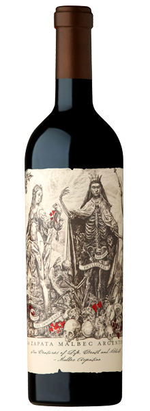
Catena Zapata Malbec (Argentina)
O Vinho: Ícone da vinícola que revolucionou o Malbec em Mendoza, vindo de vinhedos de alta altitude.
Perfil: Um tinto seco intenso, com camadas de frutas negras, violetas e uma nota mineral distinta. É potente e muito elegante.
Harmonização: É o parceiro ideal para o tradicional churrasco (picanha e bife de tira), além de pratos com cordeiro e carnes de caça.
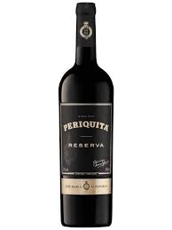
Periquita Reserva (Portugal)
O Vinho: Um clássico da Península de Setúbal com mais de 170 anos de tradição e história em Portugal.
Perfil: Um tinto seco equilibrado, que combina uvas nativas com notas de frutas vermelhas maduras e madeira bem integrada.
Harmonização: Harmoniza muito bem com pratos da culinária portuguesa, como bacalhau ao forno, cozidos de carne e queijos de ovelha curados.
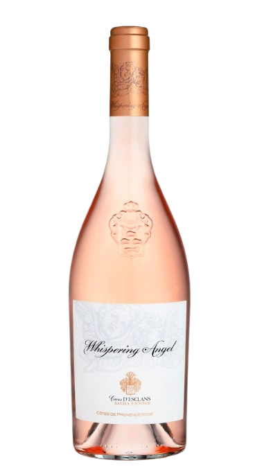
Whispering Angel Rosé (França)
O Vinho: O grande responsável por colocar os rosés de Provence novamente no topo do mercado de luxo mundial.
Perfil: Rosé seco sofisticado, de cor salmão pálida, com notas frescas de grapefruit e frutas vermelhas. É incrivelmente sedoso.
Harmonização: Excelente com sushis e sashimis, frutos do mar grelhados, saladas leves e queijos de mofo branco como o Brie.
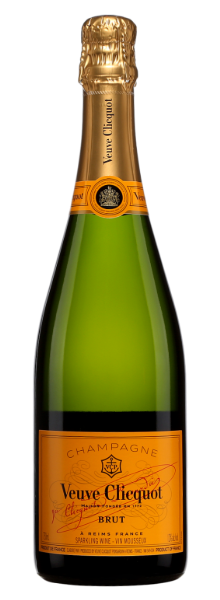
Veuve Clicquot Ponsardin Brut (França)
O Vinho: Símbolo máximo de celebração e elegância.
Perfil:
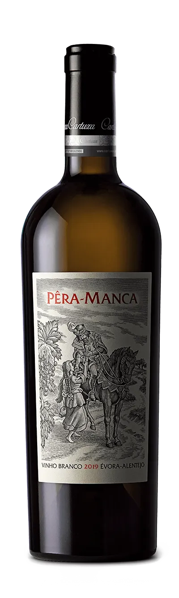
Pêra-Manca Branco (Portugal)
O Vinho: Produzido pela Fundação Eugénio de Almeida no Alentejo, é um dos brancos mais exclusivos e desejados de Portugal.
Perfil: Branco seco encorpado, com aromas de frutas amarelas e uma textura densa que possui grande potencial de guarda.
Harmonização: Harmoniza com pratos requintados como lagosta na manteiga, peixes assados no forno e aves com molhos cremosos.
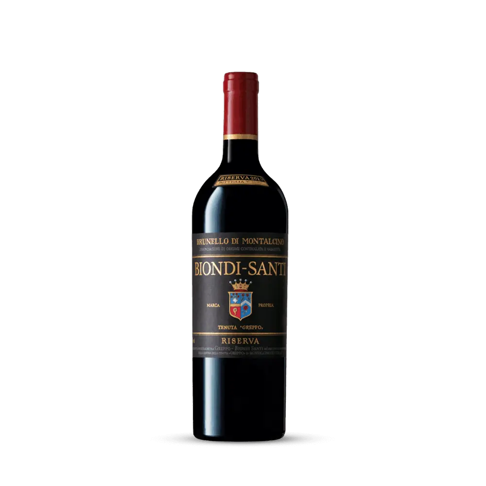
Brunello di Montalcino Biondi-Santi (Itália)
O Vinho: Considerado o "pai" do Brunello, esta família criou o estilo de vinho mais famoso da Toscana, na Itália.
Perfil: Tinto seco de guarda, profundo e terroso, com aromas de cereja seca, tabaco e uma acidez vibrante.
Harmonização: Ideal para acompanhar pratos italianos clássicos como Bisteca Fiorentina, massas com trufas e queijo Parmigiano Reggiano.
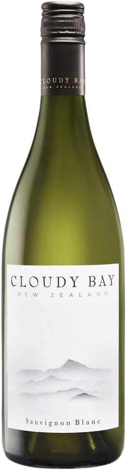
Cloudy Bay Sauvignon Blanc (Nova Zelândia)
O Vinho: O rótulo que revelou o potencial da região de Marlborough, na Nova Zelândia, para o mundo todo.
Perfil: Branco seco vibrante, com explosão de aromas cítricos de maracujá, aspargos e grama cortada. Muito refrescante.
Harmonização: Combina com saladas cítricas, queijo de cabra, peixes brancos magros e pratos da culinária tailandesa.
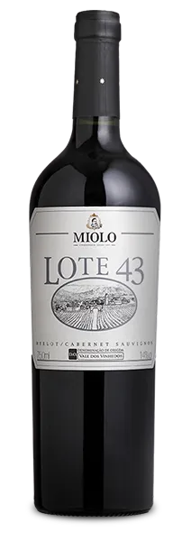
Miolo Lote 43 (Brasil)
O Vinho: Um tributo ao patriarca da família Miolo, produzido apenas em safras excepcionais no Vale dos Vinhedos, Brasil.
Perfil: Tinto seco robusto, com estágio em carvalho francês que traz notas de especiarias e frutas pretas em compota.
Harmonização: Harmoniza com carnes de panela de cozimento lento, risoto de funghi e charcutaria fina (salames e copas).
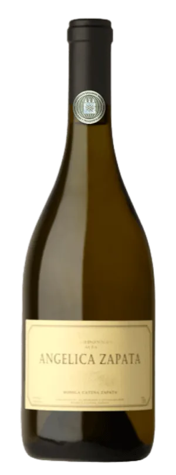
Angelica Zapata Chardonnay (Argentina)
O Vinho: Um branco de alta gama proveniente de vinhedos selecionados em altitudes elevadas na Argentina.
Perfil: Branco seco amanteigado e untuoso, com notas de baunilha, mel e abacaxi maduro devido ao estágio em madeira.
Harmonização: Perfeito para acompanhar frango assado, massas ao molho Alfredo, salmão grelhado e quiches de queijo.
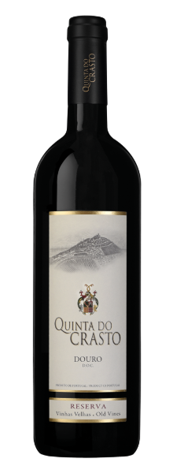
Quinta do Crasto Reserva Vinhas Velhas (Portugal)
O Vinho: Elaborado no Douro a partir de vinhedos com mais de 70 anos de idade, representando a força da tradição portuguesa.
Perfil: Tinto seco complexo e profundo, com notas de frutas silvestres maduras e uma estrutura de taninos muito fina.
Harmonização: Harmoniza com estufados de carne, arroz de pato, carnes de caça e pratos regionais bem temperados.
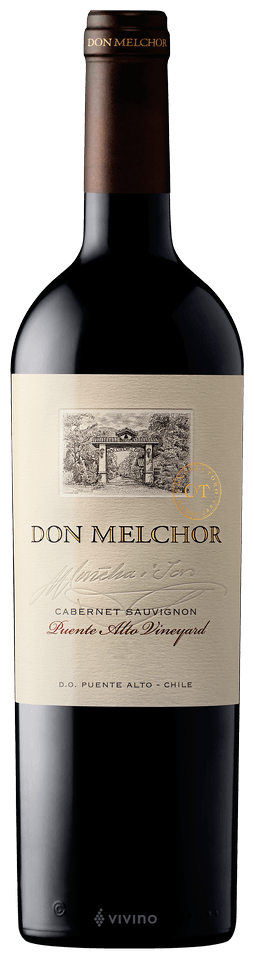
Don Melchor Cabernet Sauvignon (Chile)
O Vinho: Frequentemente apontado como o melhor Cabernet Sauvignon do Chile, vindo do prestigioso terroir de Puente Alto.
Perfil: Tinto seco de luxo, elegante e potente, com notas de groselha negra, tabaco e um toque mineral de grafite.
Harmonização: Exige pratos de alta gastronomia, como cortes nobres de carne (Wagyu), cordeiro assado ou molhos reduzidos.